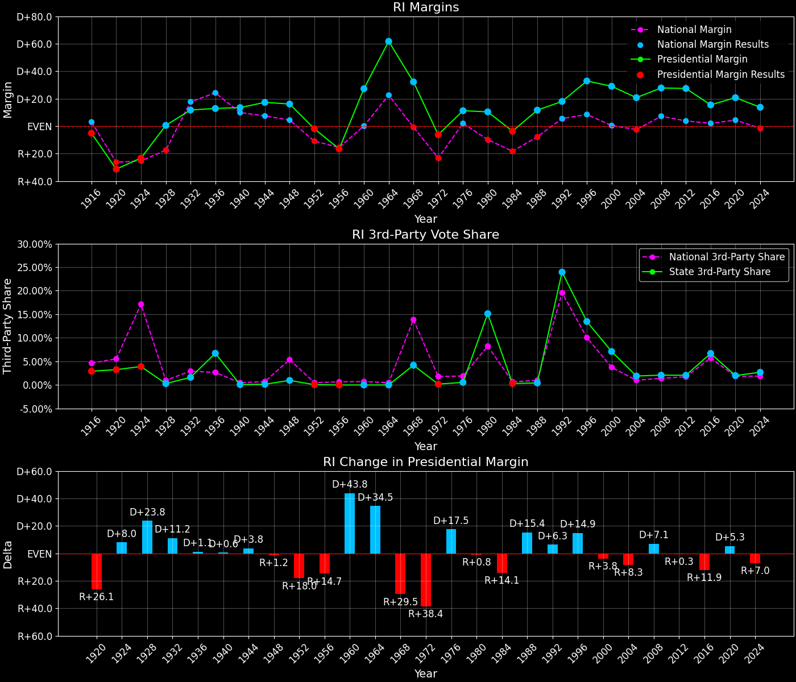
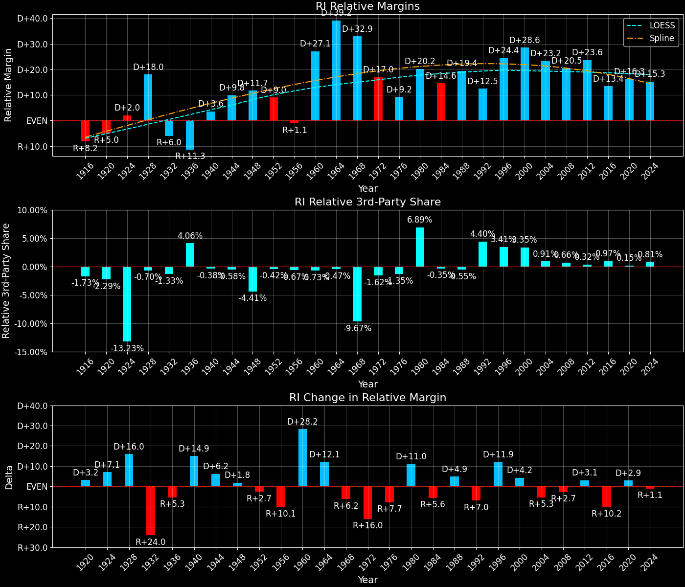

Rhode Island (RI) — Statewide

Margins · 3rd-Party share · Pres. deltas

Relative margins · Relative 3rd-Party · Rel. deltas
Rhode Island (RI) — Total Data
| Year | D | R | State Margin | Nat. Margin | Rel. Margin | Total votes | EVs |
|---|---|---|---|---|---|---|---|
| 1916 | 40,394(46.0%) | 44,858(51.1%) | R+5.1 | D+3.1 | R+8.2 | 87,816 | 5 |
| 1920 | 55,062(32.8%)(Δ 14,668) | 107,463(64.0%)(Δ 62,605) | R+31.2(Δ R+26.1) | R+26.2(Δ R+29.3) | R+5.0(Δ D+3.2) | 167,981(Δ 80,165) | 5 |
| 1924 | 76,606(36.5%)(Δ 21,544) | 125,286(59.6%)(Δ 17,823) | R+23.2(Δ D+8.0) | R+25.2(Δ D+1.0) | D+2.0(Δ D+7.1) | 210,115(Δ 42,134) | 5 |
| 1928 | 118,973(50.2%)(Δ 42,367) | 117,522(49.5%)(Δ -7,764) | D+0.6(Δ D+23.8) | R+17.4(Δ D+7.8) | D+18.0(Δ D+16.0) | 237,194(Δ 27,079) | 5 |
| 1932 | 146,604(55.1%)(Δ 27,631) | 115,266(43.3%)(Δ -2,256) | D+11.8(Δ D+11.2) | D+17.8(Δ D+35.2) | R+6.0(Δ R+24.0) | 266,170(Δ 28,976) | 4 |
| 1936 | 165,238(53.1%)(Δ 18,634) | 125,031(40.2%)(Δ 9,765) | D+12.9(Δ D+1.1) | D+24.3(Δ D+6.5) | R+11.3(Δ R+5.3) | 311,178(Δ 45,008) | 4 |
| 1940 | 182,182(56.7%)(Δ 16,944) | 138,653(43.2%)(Δ 13,622) | D+13.6(Δ D+0.6) | D+10.0(Δ R+14.3) | D+3.6(Δ D+14.9) | 321,148(Δ 9,970) | 4 |
| 1944 | 175,356(58.6%)(Δ -6,826) | 123,487(41.3%)(Δ -15,166) | D+17.3(Δ D+3.8) | D+7.5(Δ R+2.5) | D+9.8(Δ D+6.2) | 299,276(Δ -21,872) | 4 |
| 1948 | 188,736(57.6%)(Δ 13,380) | 135,787(41.4%)(Δ 12,300) | D+16.2(Δ R+1.2) | D+4.5(Δ R+3.0) | D+11.7(Δ D+1.8) | 327,702(Δ 28,426) | 4 |
| 1952 | 203,293(49.0%)(Δ 14,557) | 210,935(50.9%)(Δ 75,148) | R+1.8(Δ R+18.0) | R+10.9(Δ R+15.3) | D+9.0(Δ R+2.7) | 414,498(Δ 86,796) | 4 |
| 1956 | 161,790(41.7%)(Δ -41,503) | 225,819(58.3%)(Δ 14,884) | R+16.5(Δ R+14.7) | R+15.4(Δ R+4.5) | R+1.1(Δ R+10.1) | 387,611(Δ -26,887) | 4 |
| 1960 | 258,032(63.6%)(Δ 96,242) | 147,502(36.4%)(Δ -78,317) | D+27.3(Δ D+43.8) | D+0.2(Δ D+15.6) | D+27.1(Δ D+28.2) | 405,535(Δ 17,924) | 4 |
| 1964 | 315,463(80.9%)(Δ 57,431) | 74,615(19.1%)(Δ -72,887) | D+61.7(Δ D+34.5) | D+22.6(Δ D+22.4) | D+39.2(Δ D+12.1) | 390,091(Δ -15,444) | 4 |
| 1968 | 246,518(64.0%)(Δ -68,945) | 122,359(31.8%)(Δ 47,744) | D+32.2(Δ R+29.5) | R+0.7(Δ R+23.3) | D+32.9(Δ R+6.2) | 385,000(Δ -5,091) | 4 |
| 1972 | 194,645(46.8%)(Δ -51,873) | 220,383(53.0%)(Δ 98,024) | R+6.2(Δ R+38.4) | R+23.1(Δ R+22.4) | D+17.0(Δ R+16.0) | 415,808(Δ 30,808) | 4 |
| 1976 | 227,636(55.4%)(Δ 32,991) | 181,249(44.1%)(Δ -39,134) | D+11.3(Δ D+17.5) | D+2.1(Δ D+25.2) | D+9.2(Δ R+7.7) | 411,170(Δ -4,638) | 4 |
| 1980 | 198,342(47.7%)(Δ -29,294) | 154,793(37.2%)(Δ -26,456) | D+10.5(Δ R+0.8) | R+9.7(Δ R+11.8) | D+20.2(Δ D+11.0) | 416,072(Δ 4,902) | 4 |
| 1984 | 197,106(48.0%)(Δ -1,236) | 212,080(51.7%)(Δ 57,287) | R+3.6(Δ R+14.1) | R+18.2(Δ R+8.5) | D+14.6(Δ R+5.6) | 410,492(Δ -5,580) | 4 |
| 1988 | 225,123(55.6%)(Δ 28,017) | 177,761(43.9%)(Δ -34,319) | D+11.7(Δ D+15.4) | R+7.7(Δ D+10.5) | D+19.4(Δ D+4.9) | 404,620(Δ -5,872) | 4 |
| 1992 | 213,302(47.0%)(Δ -11,821) | 131,601(29.0%)(Δ -46,160) | D+18.0(Δ D+6.3) | D+5.6(Δ D+13.3) | D+12.5(Δ R+7.0) | 453,478(Δ 48,858) | 4 |
| 1996 | 233,050(59.7%)(Δ 19,748) | 104,683(26.8%)(Δ -26,918) | D+32.9(Δ D+14.9) | D+8.5(Δ D+3.0) | D+24.4(Δ D+11.9) | 390,284(Δ -63,194) | 4 |
| 2000 | 249,508(61.0%)(Δ 16,458) | 130,555(31.9%)(Δ 25,872) | D+29.1(Δ R+3.8) | D+0.5(Δ R+8.0) | D+28.6(Δ D+4.2) | 409,112(Δ 18,828) | 4 |
| 2004 | 259,765(59.4%)(Δ 10,257) | 169,046(38.7%)(Δ 38,491) | D+20.8(Δ R+8.3) | R+2.5(Δ R+3.0) | D+23.2(Δ R+5.3) | 437,134(Δ 28,022) | 4 |
| 2008 | 296,571(62.9%)(Δ 36,806) | 165,391(35.1%)(Δ -3,655) | D+27.8(Δ D+7.1) | D+7.3(Δ D+9.7) | D+20.5(Δ R+2.7) | 471,766(Δ 34,632) | 4 |
| 2012 | 279,677(62.7%)(Δ -16,894) | 157,204(35.2%)(Δ -8,187) | D+27.5(Δ R+0.3) | D+3.9(Δ R+3.4) | D+23.6(Δ D+3.1) | 446,049(Δ -25,717) | 4 |
| 2016 | 252,525(54.4%)(Δ -27,152) | 180,543(38.9%)(Δ 23,339) | D+15.5(Δ R+11.9) | D+2.1(Δ R+1.8) | D+13.4(Δ R+10.2) | 464,144(Δ 18,095) | 4 |
| 2020 | 307,486(59.4%)(Δ 54,961) | 199,922(38.6%)(Δ 19,379) | D+20.8(Δ D+5.3) | D+4.5(Δ D+2.4) | D+16.3(Δ D+2.9) | 517,757(Δ 53,613) | 4 |
| 2024 | 285,156(55.5%)(Δ -22,330) | 214,406(41.8%)(Δ 14,484) | D+13.8(Δ R+7.0) | R+1.5(Δ R+5.9) | D+15.3(Δ R+1.1) | 513,386(Δ -4,371) | 4 |
Column explanations
- Δ
- Change (delta) in the value from the previous election year.
- Year
- Election year.
- D
- Number of votes for the Democratic candidate (raw count(pct%)).
- R
- Number of votes for the Republican candidate (raw count(pct%)).
- State Margin
- Margin between the two major-party candidates, including third-party votes ((D - R)/total).
- Nat. Margin
- The national presidential margin for that year, including third-party votes ((D_total - R_total)/total_votes).
- Rel. Margin
- The presidential margin relative to the national presidential margin (Margin - Nat. Margin).
- Total votes
- Total voter turnout or ballots cast (when provided).
- EVs
- Number of electoral votes allocated to this state or unit.
Rhode Island (RI) — Third-Party Data
| Year | D | R | Other votes | State 3rd-Party Share | 3rd-Party Nat. Share | 3rd-Party Rel. Share |
|---|---|---|---|---|---|---|
| 1916 | 40,394(46.0%) | 44,858(51.1%) | 2,564(2.9%) | 2.92% | 4.64% | -1.73% |
| 1920 | 55,062(32.8%)(Δ 14,668) | 107,463(64.0%)(Δ 62,605) | 5,456(3.2%) | 3.25% | 5.53% | -2.29% |
| 1924 | 76,606(36.5%)(Δ 21,544) | 125,286(59.6%)(Δ 17,823) | 8,223(3.9%) | 3.91% | 17.14% | -13.23% |
| 1928 | 118,973(50.2%)(Δ 42,367) | 117,522(49.5%)(Δ -7,764) | 699(0.3%) | 0.29% | 0.99% | -0.70% |
| 1932 | 146,604(55.1%)(Δ 27,631) | 115,266(43.3%)(Δ -2,256) | 4,300(1.6%) | 1.62% | 2.94% | -1.33% |
| 1936 | 165,238(53.1%)(Δ 18,634) | 125,031(40.2%)(Δ 9,765) | 20,909(6.7%) | 6.72% | 2.66% | 4.06% |
| 1940 | 182,182(56.7%)(Δ 16,944) | 138,653(43.2%)(Δ 13,622) | 313(0.1%) | 0.10% | 0.48% | -0.38% |
| 1944 | 175,356(58.6%)(Δ -6,826) | 123,487(41.3%)(Δ -15,166) | 433(0.1%) | 0.14% | 0.72% | -0.58% |
| 1948 | 188,736(57.6%)(Δ 13,380) | 135,787(41.4%)(Δ 12,300) | 3,179(1.0%) | 0.97% | 5.38% | -4.41% |
| 1952 | 203,293(49.0%)(Δ 14,557) | 210,935(50.9%)(Δ 75,148) | 270(0.1%) | 0.07% | 0.49% | -0.42% |
| 1956 | 161,790(41.7%)(Δ -41,503) | 225,819(58.3%)(Δ 14,884) | 2(0.0%) | 0.00% | 0.67% | -0.67% |
| 1960 | 258,032(63.6%)(Δ 96,242) | 147,502(36.4%)(Δ -78,317) | 1(0.0%) | 0.00% | 0.73% | -0.73% |
| 1964 | 315,463(80.9%)(Δ 57,431) | 74,615(19.1%)(Δ -72,887) | 13(0.0%) | 0.00% | 0.48% | -0.47% |
| 1968 | 246,518(64.0%)(Δ -68,945) | 122,359(31.8%)(Δ 47,744) | 16,123(4.2%) | 4.19% | 13.86% | -9.67% |
| 1972 | 194,645(46.8%)(Δ -51,873) | 220,383(53.0%)(Δ 98,024) | 780(0.2%) | 0.19% | 1.80% | -1.62% |
| 1976 | 227,636(55.4%)(Δ 32,991) | 181,249(44.1%)(Δ -39,134) | 2,285(0.6%) | 0.56% | 1.90% | -1.35% |
| 1980 | 198,342(47.7%)(Δ -29,294) | 154,793(37.2%)(Δ -26,456) | 62,937(15.1%) | 15.13% | 8.24% | 6.89% |
| 1984 | 197,106(48.0%)(Δ -1,236) | 212,080(51.7%)(Δ 57,287) | 1,306(0.3%) | 0.32% | 0.67% | -0.35% |
| 1988 | 225,123(55.6%)(Δ 28,017) | 177,761(43.9%)(Δ -34,319) | 1,736(0.4%) | 0.43% | 0.98% | -0.55% |
| 1992 | 213,302(47.0%)(Δ -11,821) | 131,601(29.0%)(Δ -46,160) | 108,575(23.9%) | 23.94% | 19.55% | 4.40% |
| 1996 | 233,050(59.7%)(Δ 19,748) | 104,683(26.8%)(Δ -26,918) | 52,551(13.5%) | 13.46% | 10.05% | 3.41% |
| 2000 | 249,508(61.0%)(Δ 16,458) | 130,555(31.9%)(Δ 25,872) | 29,049(7.1%) | 7.10% | 3.75% | 3.35% |
| 2004 | 259,765(59.4%)(Δ 10,257) | 169,046(38.7%)(Δ 38,491) | 8,323(1.9%) | 1.90% | 1.00% | 0.91% |
| 2008 | 296,571(62.9%)(Δ 36,806) | 165,391(35.1%)(Δ -3,655) | 9,804(2.1%) | 2.08% | 1.42% | 0.66% |
| 2012 | 279,677(62.7%)(Δ -16,894) | 157,204(35.2%)(Δ -8,187) | 9,168(2.1%) | 2.06% | 1.73% | 0.32% |
| 2016 | 252,525(54.4%)(Δ -27,152) | 180,543(38.9%)(Δ 23,339) | 31,076(6.7%) | 6.70% | 5.73% | 0.97% |
| 2020 | 307,486(59.4%)(Δ 54,961) | 199,922(38.6%)(Δ 19,379) | 10,349(2.0%) | 2.00% | 1.84% | 0.15% |
| 2024 | 285,156(55.5%)(Δ -22,330) | 214,406(41.8%)(Δ 14,484) | 13,824(2.7%) | 2.69% | 1.88% | 0.81% |
Column explanations
- Year
- Election year.
- D
- Number of votes for the Democratic candidate (raw count(pct%)).
- R
- Number of votes for the Republican candidate (raw count(pct%)).
- Other votes
- Number of votes for third-party (other) candidates (raw count(pct%)).
- State 3rd-Party Share
- Share of the vote received by third-party (other) candidates.
- 3rd-Party Nat. Share
- The national third-party share for that year (3rd-Party votes / total votes).
- 3rd-Party Rel. Share
- Third-party share relative to the national third-party share (3rd-Party share - Nat. 3rd-Party share).

Two-party margins · relative · deltas
Rhode Island (RI) — Two-Party Data
| Year | D | R | 2-Party Margin | 2-Party Nat. Margin | 2-Party Rel. Margin | EVs |
|---|---|---|---|---|---|---|
| 1916 | 40,394(47.4%) | 44,858(52.6%) | R+5.2 | D+3.3 | R+8.5 | 5 |
| 1920 | 55,062(33.9%)(Δ 14,668) | 107,463(66.1%)(Δ 62,605) | R+32.2(Δ R+27.0) | R+27.7(Δ R+31.0) | R+4.5(Δ D+4.0) | 5 |
| 1924 | 76,606(37.9%)(Δ 21,544) | 125,286(62.1%)(Δ 17,823) | R+24.1(Δ D+8.1) | R+30.4(Δ R+2.7) | D+6.3(Δ D+10.9) | 5 |
| 1928 | 118,973(50.3%)(Δ 42,367) | 117,522(49.7%)(Δ -7,764) | D+0.6(Δ D+24.7) | R+17.6(Δ D+12.8) | D+18.2(Δ D+11.9) | 5 |
| 1932 | 146,604(56.0%)(Δ 27,631) | 115,266(44.0%)(Δ -2,256) | D+12.0(Δ D+11.4) | D+18.3(Δ D+35.9) | R+6.3(Δ R+24.5) | 4 |
| 1936 | 165,238(56.9%)(Δ 18,634) | 125,031(43.1%)(Δ 9,765) | D+13.9(Δ D+1.9) | D+24.9(Δ D+6.6) | R+11.1(Δ R+4.7) | 4 |
| 1940 | 182,182(56.8%)(Δ 16,944) | 138,653(43.2%)(Δ 13,622) | D+13.6(Δ R+0.3) | D+10.0(Δ R+14.9) | D+3.6(Δ D+14.6) | 4 |
| 1944 | 175,356(58.7%)(Δ -6,826) | 123,487(41.3%)(Δ -15,166) | D+17.4(Δ D+3.8) | D+7.5(Δ R+2.5) | D+9.8(Δ D+6.2) | 4 |
| 1948 | 188,736(58.2%)(Δ 13,380) | 135,787(41.8%)(Δ 12,300) | D+16.3(Δ R+1.0) | D+4.7(Δ R+2.8) | D+11.6(Δ D+1.8) | 4 |
| 1952 | 203,293(49.1%)(Δ 14,557) | 210,935(50.9%)(Δ 75,148) | R+1.8(Δ R+18.2) | R+10.9(Δ R+15.6) | D+9.1(Δ R+2.5) | 4 |
| 1956 | 161,790(41.7%)(Δ -41,503) | 225,819(58.3%)(Δ 14,884) | R+16.5(Δ R+14.7) | R+15.5(Δ R+4.6) | R+1.0(Δ R+10.1) | 4 |
| 1960 | 258,032(63.6%)(Δ 96,242) | 147,502(36.4%)(Δ -78,317) | D+27.3(Δ D+43.8) | D+0.2(Δ D+15.7) | D+27.1(Δ D+28.1) | 4 |
| 1964 | 315,463(80.9%)(Δ 57,431) | 74,615(19.1%)(Δ -72,887) | D+61.7(Δ D+34.5) | D+22.7(Δ D+22.5) | D+39.1(Δ D+12.0) | 4 |
| 1968 | 246,518(66.8%)(Δ -68,945) | 122,359(33.2%)(Δ 47,744) | D+33.7(Δ R+28.1) | R+0.8(Δ R+23.5) | D+34.5(Δ R+4.6) | 4 |
| 1972 | 194,645(46.9%)(Δ -51,873) | 220,383(53.1%)(Δ 98,024) | R+6.2(Δ R+39.9) | R+23.6(Δ R+22.8) | D+17.4(Δ R+17.1) | 4 |
| 1976 | 227,636(55.7%)(Δ 32,991) | 181,249(44.3%)(Δ -39,134) | D+11.3(Δ D+17.5) | D+2.1(Δ D+25.7) | D+9.2(Δ R+8.1) | 4 |
| 1980 | 198,342(56.2%)(Δ -29,294) | 154,793(43.8%)(Δ -26,456) | D+12.3(Δ D+1.0) | R+10.6(Δ R+12.7) | D+22.9(Δ D+13.7) | 4 |
| 1984 | 197,106(48.2%)(Δ -1,236) | 212,080(51.8%)(Δ 57,287) | R+3.7(Δ R+16.0) | R+18.3(Δ R+7.7) | D+14.7(Δ R+8.3) | 4 |
| 1988 | 225,123(55.9%)(Δ 28,017) | 177,761(44.1%)(Δ -34,319) | D+11.8(Δ D+15.4) | R+7.8(Δ D+10.5) | D+19.6(Δ D+4.9) | 4 |
| 1992 | 213,302(61.8%)(Δ -11,821) | 131,601(38.2%)(Δ -46,160) | D+23.7(Δ D+11.9) | D+6.9(Δ D+14.7) | D+16.8(Δ R+2.8) | 4 |
| 1996 | 233,050(69.0%)(Δ 19,748) | 104,683(31.0%)(Δ -26,918) | D+38.0(Δ D+14.3) | D+9.5(Δ D+2.6) | D+28.5(Δ D+11.8) | 4 |
| 2000 | 249,508(65.6%)(Δ 16,458) | 130,555(34.4%)(Δ 25,872) | D+31.3(Δ R+6.7) | D+0.5(Δ R+8.9) | D+30.8(Δ D+2.2) | 4 |
| 2004 | 259,765(60.6%)(Δ 10,257) | 169,046(39.4%)(Δ 38,491) | D+21.2(Δ R+10.1) | R+2.5(Δ R+3.0) | D+23.6(Δ R+7.1) | 4 |
| 2008 | 296,571(64.2%)(Δ 36,806) | 165,391(35.8%)(Δ -3,655) | D+28.4(Δ D+7.2) | D+7.4(Δ D+9.9) | D+21.0(Δ R+2.6) | 4 |
| 2012 | 279,677(64.0%)(Δ -16,894) | 157,204(36.0%)(Δ -8,187) | D+28.0(Δ R+0.4) | D+3.9(Δ R+3.4) | D+24.1(Δ D+3.1) | 4 |
| 2016 | 252,525(58.3%)(Δ -27,152) | 180,543(41.7%)(Δ 23,339) | D+16.6(Δ R+11.4) | D+2.2(Δ R+1.7) | D+14.4(Δ R+9.7) | 4 |
| 2020 | 307,486(60.6%)(Δ 54,961) | 199,922(39.4%)(Δ 19,379) | D+21.2(Δ D+4.6) | D+4.5(Δ D+2.3) | D+16.7(Δ D+2.3) | 4 |
| 2024 | 285,156(57.1%)(Δ -22,330) | 214,406(42.9%)(Δ 14,484) | D+14.2(Δ R+7.0) | R+1.5(Δ R+6.0) | D+15.7(Δ R+1.0) | 4 |
Column explanations
- Δ
- Change (delta) in the value from the previous election year.
- Year
- Election year.
- D
- Number of votes for the Democratic candidate (raw count(pct%)).
- R
- Number of votes for the Republican candidate (raw count(pct%)).
- 2-Party Margin
- Margin between the two major-party candidates, ignoring third-party votes ((D - R)/(D + R)).
- 2-Party Nat. Margin
- The national presidential margin for that year, including third-party votes ((D_total - R_total)/total_votes).
- 2-Party Rel. Margin
- The presidential margin relative to the national presidential margin (Margin - Nat. Margin).
- EVs
- Number of electoral votes allocated to this state or unit.